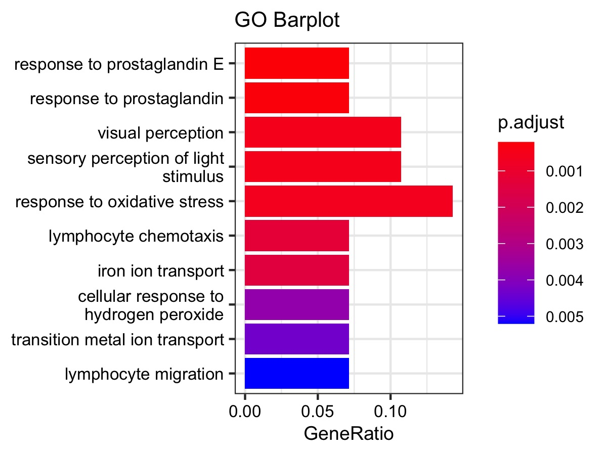
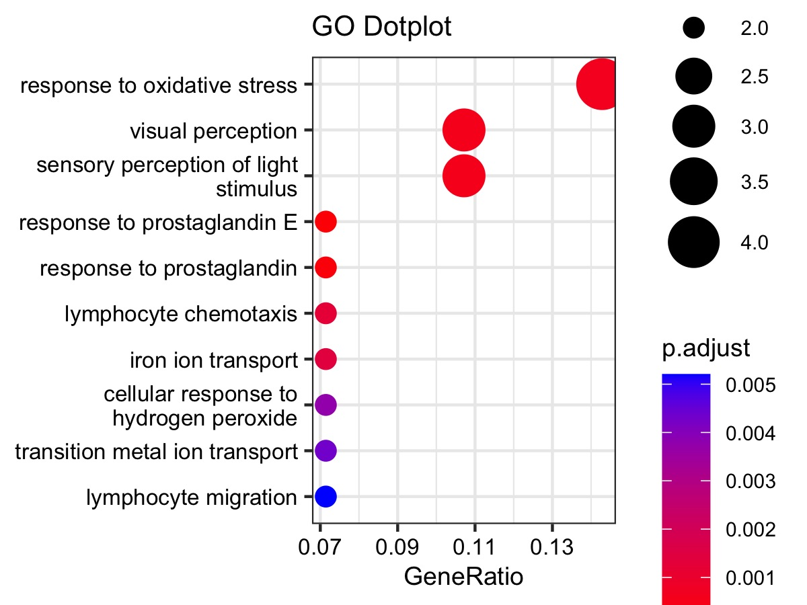
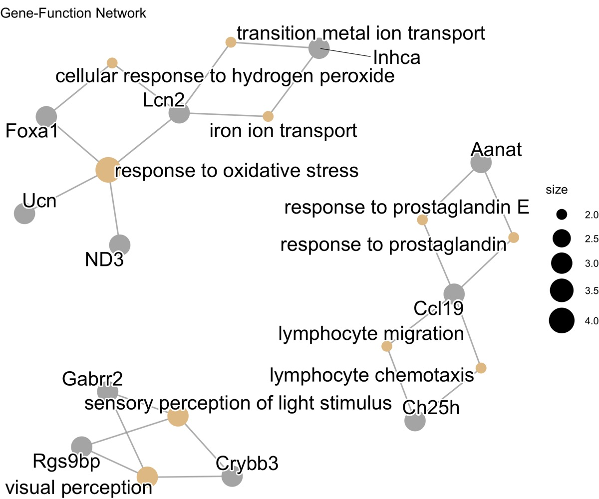
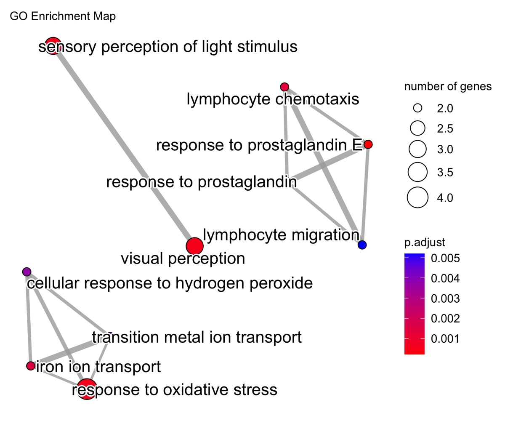
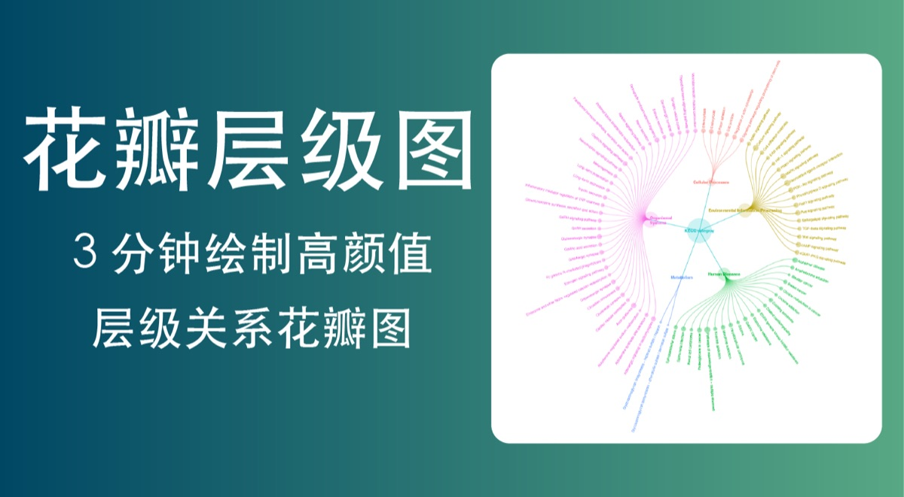

富集结果可视化：从条形图到通路地图
GO / KEGG 富集结果怎么画：四种总览图型、pathview 通路地图、多组交集花瓣图，附 clusterProfiler R 示例脚本。
选图逻辑：同一份结果，图型决定读者带走什么
富集分析的输出是一张通路排名表，直接甩给读者等于没分析。可视化要回答的是「你最想让读者记住哪一件事」：是哪几条通路显著，是通路里有多少基因支撑，还是通路之间的功能关联。下表是四种常用总览图型的分工，先选对图，再谈画法。
| 图型 | 回答的问题 | 一句话场景 |
|---|---|---|
| barplot | 哪几条通路显著？ | 最稳的入门图，适合汇报与组会 |
| dotplot | 显著性、基因数、富集倍数各多大？ | 三个量压进一张图，论文主图首选 |
| cnetplot | 基因落在哪些通路里？ | 展示通路–基因归属关系 |
| enrichmap（emapplot） | 通路之间有多相似？ | 按重叠度聚类，看模块不看排名 |
GO 富集：四种总览画法
同一份 GO 富集结果（clusterProfiler1 输出），四种画法各取一面：barplot 回答「哪几条 BP/MF/CC 条目显著」；dotplot 把基因数、显著性与富集倍数压进一张图；cnetplot 展示通路与基因的归属网络；enrichmap 按基因间重叠度自动聚类，看模块不看排名2。




KEGG 富集：四层下钻，从全貌到机制
KEGG 结果不止一张气泡图。从总览条形图，到同时编码显著性与基因数的 dot 图，再到通路–基因归属网络，最后用 pathview 把表达方向直接叠加回 KEGG 通路地图4——四张图是一层层的下钻：先看全貌，再定位，最后落到机制解释。图中下调基因的示例也提醒：富集图要分方向出（参见 No.013/016 方向性富集）。


多组交集：Venn 画不下了怎么办
比较多个方向的富集结果时，集合交集图是常用入口：两组三组用 Venn 图足够直观；组数一多（五组以上），Venn 就会糊成一片，此时花瓣图（flower plot）更合适——花心是所有组共有的条目，每一片花瓣是该组独有的条目，用固定的花瓣排布把「谁独有、谁共有」数清，特别适合多组富集结果的概览页：先给读者一张全景图，再进各组明细。

R 示例代码：从差异表到全套富集图
下面的脚本把这条流水线串起来：方向拆分 → 方向性 ORA → 四种总览图 → pathview 叠加。物种以小鼠（org.Mm.eg.db）为例，换成人类改用 org.Hs.eg.db 与 organism = "hsa" 即可。
library(clusterProfiler)
library(org.Mm.eg.db) # 小鼠注释库；人用 org.Hs.eg.db
library(pathview)
## ① 差异基因按方向拆分（示例：DESeq2 结果 res；padj < 0.05 且 |log2FC| > 1）
sig <- subset(as.data.frame(res), padj < 0.05 & abs(log2FoldChange) > 1)
up <- bitr(rownames(subset(sig, log2FoldChange > 0)), fromType = "ENSEMBL",
toType = "ENTREZID", OrgDb = org.Mm.eg.db)$ENTREZID
down <- bitr(rownames(subset(sig, log2FoldChange < 0)), fromType = "ENSEMBL",
toType = "ENTREZID", OrgDb = org.Mm.eg.db)$ENTREZID
## ② 方向性 ORA：上调 / 下调各做一遍，不要混在一起
ego_up <- enrichGO(up, OrgDb = org.Mm.eg.db, keyType = "ENTREZID",
ont = "BP", pAdjustMethod = "BH",
pvalueCutoff = 0.05, readable = TRUE)
ekegg_dn <- enrichKEGG(down, organism = "mmu", pAdjustMethod = "BH",
pvalueCutoff = 0.05)
## ③ 四种总览图：选图前先想清楚要让读者记住哪一件事
barplot(ego_up, showCategory = 10) # 哪几条通路显著（最稳的入门图）
dotplot(ekegg_dn, showCategory = 10) # 显著性 × 基因数 × 富集倍数一图三用
cnetplot(ego_up, showCategory = 5) # 通路–基因归属网络
emapplot(ego_up, showCategory = 30) # 按通路重叠度聚类的地图，看模块不看排名
## ④ pathview：把表达方向叠回 KEGG 通路地图（颜色 = log2FC）
gene_list <- sig$log2FoldChange
names(gene_list) <- bitr(rownames(sig), fromType = "ENSEMBL",
toType = "ENTREZID", OrgDb = org.Mm.eg.db)$ENTREZID
pathview(gene.data = gene_list, pathway.id = "mmu01200",
species = "mmu", low = "#66b2ff", high = "#ff6b6b")两个提醒：① 上调与下调分别富集，混在一起会让相反方向的通路互相抵消；② 富集图给的是「参与程度」的证据，不是活性变化的证据，机制结论仍需回到表达方向与实验验证。
选图建议：论文主图一般一张 dotplot 就够；cnetplot 基因多时容易糊，先限定 showCategory；emapplot 适合放进补充材料展示通路聚类细节。
延伸阅读与参考文献
- Yu G, Wang LG, Han Y, He QY. clusterProfiler: an R package for comparing biological themes among gene clusters. OMICS. 2012;16(5):284–287. doi:10.1089/omi.2011.0118
- Gene Ontology Consortium. The Gene Ontology knowledgebase in 2023. GENETICS. 2023;224(1):iyad031. doi:10.1093/genetics/iyad031
- Kanehisa M, Furumichi M, Sato Y, Kawashima M, Ishiguro-Watanabe M. KEGG for taxonomy-based analysis of pathways and genomes. Nucleic Acids Research. 2023;51(D1):D587–D592. doi:10.1093/nar/gkac963
- Luo W, Pant G, Bhavnasi YK, Blanchard SG, Brouwer C. Pathview Web: user friendly pathway visualization and data integration. Nucleic Acids Research. 2017;45(W1):W501–W508. doi:10.1093/nar/gkx372